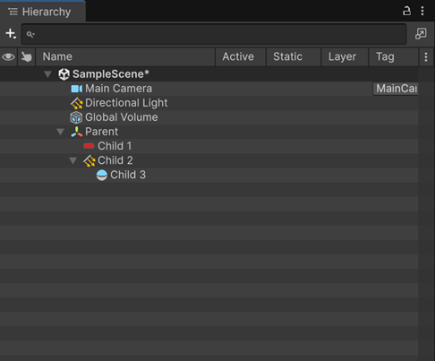

Use parent-child relationships to group GameObjects in the Hierarchy window so that you can move, rotate, and scale them together. A GameObject can contain other GameObjects that inherit some of its properties, which lets you link GameObjects together and transform a whole collection as one.
To create and manage these relationships, refer to Manage GameObjects in the Hierarchy window.
A top-level GameObject is a parent. The GameObjects grouped underneath it are its child GameObjects. A parent can have multiple child GameObjects, but a child GameObject can have only one parent. Child GameObjects that share a parent are siblings.
A child GameObject can have its own child GameObjects. All GameObjects nested under a parent are descendant GameObjects of that parent, and the top-level parent is the root GameObject. Every GameObject can accept a child GameObject, so any GameObject can become a parent.
A child GameObject inherits the movement, rotation, and scale of its parent. When you move, rotate, or resize a parent GameObject, its child GameObjects change with it and keep their relative positions and scale. To change a single child GameObject without affecting its parent or siblings, select it in the Hierarchy window and edit it directly.
For example, if you have a table with a cup and a plate on it, you can make the table the parent of the cup and the plate. When you move the table, the cup and plate move with it. If you resize the table, the cup and plate resize too and keep their relative positions.

To learn how parent-child relationships affect the position of a GameObject, refer to Local and world space. To set parent-child relationships in a C# script, use the Transform.SetParent method or the Transform.parent property of the child GameObject.